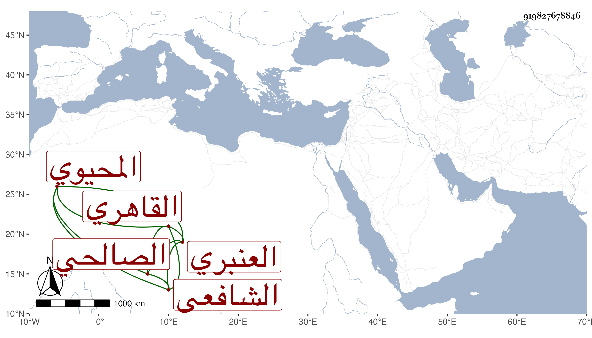

0902Sakhawi.DawLamic.ITO20230111-ara1.EIS1600.919827678846
Biography ID: 919827678846
790
عبد القادر بن أبي الفتح محمد بن موسى بن إبراهيم المحيوي الصالحي القاهري الشافعي العنبري أحد جماعة الجوجري . زعم أنه أنصاري وينتمي أيضا للزبير بن العوام وأنه سبط العز بن عبد السلام ممن انتصر لشيخه الجوجري ورد على ابن السيوطي بما كان الرجل في غنية عنه وأحضره إلي لأكتب عليه فامتنعت وكذا سمعت أن شيخه لم يعجبه ذلك ، بلغني أنه حفظ البهجة وألفية النحو وجمع الجوامع وأنه أخذ البهجة تقسيما عن ابن الفالاتي وكذا أخذ عن ابن قاسم وعرف بالجوجري وقال إنه يروي عن القمصي فكأنه عرض عليه ولزم طريقة والده في التكسب بالعنبريين مع التدريس وإقراء الطلبة وعده في الفضلاء .
